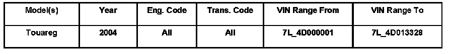
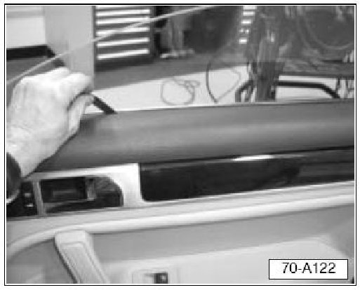
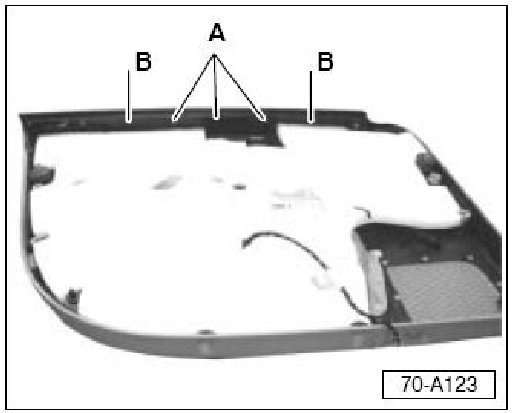
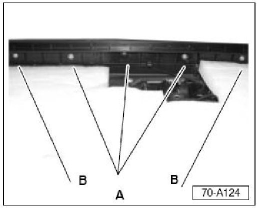
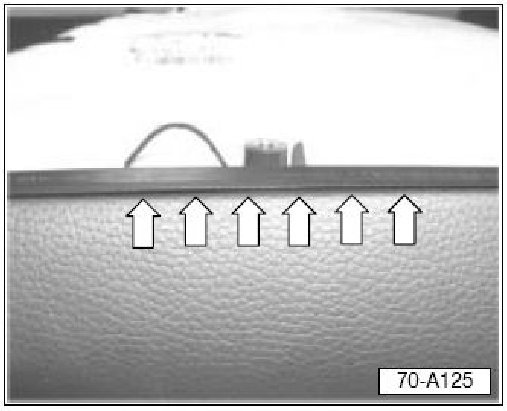
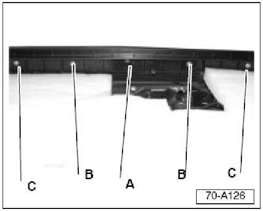
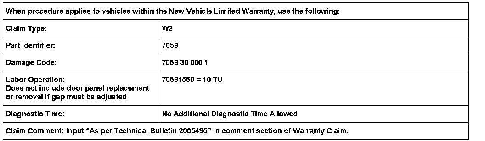

Interior - Door Panel Vinyl Trim Peeling
ConditionFront Door Panel, Vinyl Peeling Away Near Door Glass

70 06 09 Nov. 17, 2006, 2005495, Supersedes Technical Bulletin Group 70 number 03-03 dated Sep.10, 2003 due to inclusion into ElsaWeb.
Technical Background
May be caused by window interference with vinyl on Front door trim panel.
Production Solution
Door trim panel to window Gap optimized beginning with VIN: 7L_4D013329.
Service
- Replace door panel (see Repair Manual Repair Group 70 - Interior trim, Door trims).
With new door panel installed, check Window to door panel gap as follows:

- Lower window completely.
- Raise window to approx.1/3 closed position.
- Slide Special Tool No: JC4360 (0.3 mm feeler gauge) between glass and door panel from front to rear of panel.
If gauge slides with no resistance:
- No additional work is necessary.
If gauge slides with resistance near middle of window opening:
- Gap must be adjusted.
- Mark area of resistance on panel with tape.
- Remove door panel (see Repair Manual Repair Group 70 - Interior trim, Door trims).
To adjust gap:

- Locate screws attaching plastic locator channel to door panel -A- and -B-.

- Remove three center screws -A- from plastic locator channel, located on back side of door panel.
- Loosen screws -B- at each side of center screws -A-.
- Flip Panel over.

- Insert Special Tool No: JC4350 (0.5 mm feeler gauge) between panel and plastic locator channel at area previously marked with tape (near arrows).
This creates a minimum of 0.5 mm gap between plastic locator and the door panel vinyl.
With Special tool No: JC4350 (0.5 mm feeler gauge) held in place:

- Install center screw -A- in a new location on plastic channel.
- Install two remaining screws -B- in new locations on plastic channel.
- Tighten two screws -C- in original holes.
- Remove feeler gauge from door panel.
- Install door panel (see Repair Manual Repair Group 70 - Interior trim, Door trims).
- Using special tool JC4360, verify a minimum gap of 0.3 mm between door panel (vinyl) and glass at areas previously marked with tape.
- Cycle window up and down to verify that no contact between glass and door panel exists.
- Remove marking tape.

Warranty
Required Parts and Tools
Description Tool No:
0.3 mm Feeter Gauge JC4360
0.5 mm Feeter Gauge JC4350